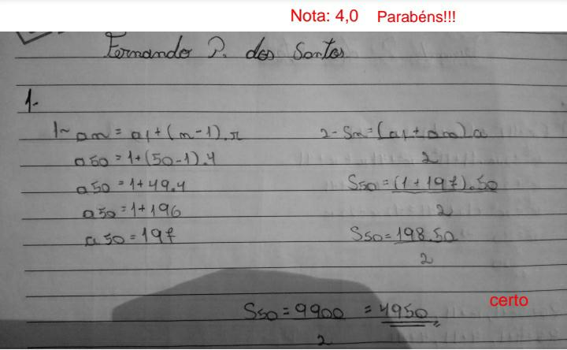

Chama-se Progressão Aritmética (PA) a sequência de números em que cada termo, a partir do segundo, é a soma do anterior com uma constante dada r. A PA possui 3 classifações:
Cresente:cada termo é maior do que o anterior, ou seja, r > 0.
Connstantes:cada termo é igual ao anterior, então, r = 0.
Decresente:cada termo é menor que o anterior, logo, r (maior que) 0.
o Chama-se Progressão Geométrica (PG) a sequência de números em que cada termo, a partir do segundo, é o produto do anterior por uma constante dada q. O PG é dividido em 5 classificações:
Crescente: cada termo é maior do que o anterior.
PG com termos positivos: q -> (maior que) 1.
PG com termos negativos: 0 q (menor que) 1.
Constantes: cada termo é igual ao anterior.
PG com todos os termos nulos: a1 = 0 e q qualquer
PG com termos iguais e não nulos: a = 0 e q = 1
Decrescente: cada termo é menor que o anterior.
PG com termos positivos: 0 (maior que) q (maior que) 1
PG com termos negativos: q > 1.
Alternantes: cada termo tem sinal contrário ao do termo anterior. Isso ocorre quando q (maior que) 0.
Estacionárias: Apenas o primeiro termo é diferente de zero: a1 ≠ 0 e q = 0
Esse foi o único trabalho que eu consegui me concentrar e aplicar o conteúdo que eu havia entendido, o que é bom, mas pelo lado ruim eu demorei muito tempo para conseguir fazer. Uma das partes da matéria que eu achei mais difícil foi a parte que eu tirei a nota mais alta e isso me fez muito bem e me deixou feliz; tanto por eu ter superado as minhas expectativas em relação a esse trabalho quanto as expectativas sobre mim mesmo.
